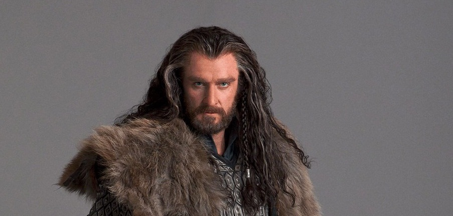
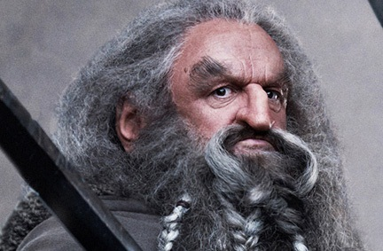
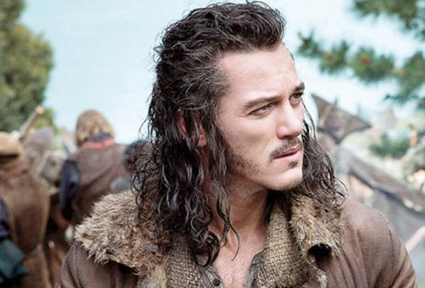

Ian McKeller as Gandalf the Grey:

Ian McKellen, born and raised in the north of England, has been honored with over 50 international acting awards during his more than half a century on stage and screen. He is beloved by fans worldwide as Magneto in the "X-Men" films and Gandalf in "The Lord of the Rings" and "The Hobbit" trilogies.
Martin Freeman as Bilbo Baggins:

Martin John C. Freeman (born 8 September 1971) is an English actor. He is known for his roles as Tim Canterbury in the BBC's Golden Globe-winning comedy The Office, John in Love Actually, Arthur Dent in the film adaptation of Douglas Adams' The Hitchhiker's Guide to the Galaxy, Dr. Watson in Sherlock and Paul Maddens in Nativity! He has been cast in the lead role of Bilbo Baggins in Peter Jackson's three-part adaptation of The Hobbit.
- Biography Source: wikipedia.org, License: Attribution-ShareAlike 3.0
- Biography Source: wikipedia.org, License: Attribution-ShareAlike 3.0
Richard Armitage as Thorin Oakenshield:

Richard Armitage was born and raised in Leicester, England. He attended Pattison College in Binley Road, Coventry, and studied at LAMDA (the London Academy of Music and Dramatic Art). His first appearance on the screen was in a small role in This Year's Love (1999), but it was Sparkhouse (2002) that gave him a break-through role as the charming but a bit odd character of John Standring opposite Sarah Smart. After two guest-roles in Cold Feet (1997) in 2003 and Between the Sheets (2003), he landed a role as Steven in Frozen (2005), which eventually led him to play the lead role in the big hit BBC drama North & South (2004). Other than appearing on screen, he has also appeared on stage--in, for example, Macbeth and Hamlet
- IMDb Mini Biography By: Jen
- IMDb Mini Biography By: Jen
Ken Scott as Balin:

Ken Stott was born in 1955 in Edinburgh, Scotland. He is an actor, known for The Hobbit: An Unexpected Journey (2012), The Hobbit: The Desolation of Smaug (2013) and Shallow Grave (1994).
-IMDb
-IMDb
Graham McTavish as Dwalin:

Graham McTavish is a Scottish television, film, and voice actor. McTavish has also had many supporting roles in British dramas and films such as Casualty, Jekyll, The Bill, Taggart, and Sisterhood. He also played the ill-tempered Mercenary Commander Lewis in Rambo alongside Sylvester Stallone.
- IMDb Mini Biography By: Trask
- IMDb Mini Biography By: Trask
William Kircher as Bifur:

William Kircher graduated from NZ Drama School aged only 18, having lied about his age when applying two years before. He began a busy theatre career that has been interrupted by occasional screen acting roles, and later a move into behind the scenes work.
- IMDb Mini Biography By: www.nzonscreen.com
- IMDb Mini Biography By: www.nzonscreen.com
James Nesbitt as Bofur:

Educated at Coleraine Academical Institution (also school of Brian Campbell & Brian McAlister), James had no interest in acting, concentrating on his French studies. It was not until teacher Robert Simpson encouraged him to take an apprenticeship at the local Riverside Theatre that his interest began, eventually leading him to a drama school in London.
- IMDb Mini Biography By: Anonymous
- IMDb Mini Biography By: Anonymous
Stephen Hunter as Bombur:

Stephen Hunter was born in Wellington, New Zealand and was unwittingly cast as "the clown" from a young age. The label clearly sat well with Stephen, who quickly developed a great sense of comic timing, and a reputation as the "go to" funny guy. Very early in his career the camera beaconed. And after honing his skills on New Zealand Television, Stephen headed for Australia.
- IMDb Mini Biography By: Stephen Hunter
- IMDb Mini Biography By: Stephen Hunter
Dean O'Gorman as Fili:

Dean O'Gorman was born on December 1, 1976 in Auckland, New Zealand. He is an actor, known for The Hobbit: An Unexpected Journey (2012), The Hobbit: The Desolation of Smaug (2013) and Young Hercules (1998).
-IMDb
-IMDb
Aidan Turner as Kili:

Aidan Turner was born in 1983, Dublin, Ireland. After graduating from the Gaiety School of Acting in 2004. Aidan has appeared in a number of plays many with Ireland's national theatre, The Abbey Theatre. Such productions include, The Plough and the Stars, Romeo and Juliet, A Cry from Heaven. In 2008 Turner starred in popular Irish TV drama The Clinic for 2 series. During this time Aidan appeared as Mitchell in the BBC hit show Being Human which he starred in for 3 series. This was followed by the BBC's Desperate Romantic's in which Turner played the troubled pre raphaelite painter Dante Gabriel Rossetti. Soon after Aidan appeared in the critically acclaimed TV movie Hattie for the BBC. In 2011, Peter Jackson cast Aidan in the role of Kili in JRR Tolkien's The Hobbit. The Hobbit trilogy filmed for 14 months in New Zealand after which Aidan starred in Cassandra Clare's The Mortal Instruments which is due for release August 2013 directed by Harald Zwart.
- IMDb Mini Biography By: Anonymous
- IMDb Mini Biography By: Anonymous
John Callen as Oin:

John has worked for 40 years as a professional actor, director and writer in theatre, radio, film and television. He has performed in or directed more than 100 stage productions and more than two dozen television series, and narrated close to 150 documentaries.
- IMDb Mini Biography By: John Callen
- IMDb Mini Biography By: John Callen
Peter Hambleton as Gloin:

Peter Hambleton is an actor, known for The Hobbit: An Unexpected Journey (2012), The Hobbit: The Desolation of Smaug (2013) and The Last Tattoo (1994).
-IMDb
-IMDb
Jed Brophy as Nori:

Jed Brophy (born 1963) is a film actor from New Zealand. He has appeared in several of Peter Jackson's films, including Braindead, Heavenly Creatures, The Lord of the Rings film trilogy, King Kong, and will also appear as the dwarf Nori in The Hobbit films.
- Biography Source: wikipedia.org, License: Attribution-ShareAlike 3.0
- Biography Source: wikipedia.org, License: Attribution-ShareAlike 3.0
Mark Hadlow as Dori:

Actor, comedian, singer, writer, producer, director - Mark Hadlow is one of New Zealand's most prominent actors and entertainers. He is driven by a passion for performance: 130 plays, musical theatre, dozens of film appearances, television series, commercials and radio voice-overs in the thousands.
- IMDb Mini Biography By: Mark Hadlow
- IMDb Mini Biography By: Mark Hadlow
Adam Brown as Ori:

Adam, an English actor who was born in Hungerford, Berkshire. Adam Brown's first film role came when he was cast as the dwarf Ori in the three-part adaptation of J.R.R. Tolkien's The Hobbit. He trained in Performing Arts at Middlesex University with John Wright.
- IMDb Mini Biography By: United Artist London
- IMDb Mini Biography By: United Artist London
Orlando Bloom as Legolas:

Orlando Bloom was born in Canterbury, Kent, England on January 13, 1977. Orlando attended St. Edmunds School in Canterbury but struggled in many courses because of dyslexia. He did embrace the arts, however, and enjoyed pottery, photography and sculpturing. He also participated in school plays and was active at his local theater. As a teen, Orlando landed his first job: he was a clay trapper at a pigeon shooting range. Encouraged by his mother, he and his sister began studying poetry and prose, eventually giving readings at Kent Festival. Orlando and Samantha won many poetry and Bible reciting competitions. Then Orlando, who always idolized larger-than-life characters, gravitated towards serious acting. At the age of 16, he moved to London and joined the National Youth Theatre, spending two seasons there and gaining a scholarship to train with the British American Drama Academy. Like many young actors, he also auditioned for a number of television roles to further his career, landing bit parts in British television shows Casualty (1986), Midsomer Murders (1997) and Smack the Pony (1999). He also appeared in the critically acclaimed movie Wilde (1997).
- IMDb Mini Biography By: J.W. Braun
- IMDb Mini Biography By: J.W. Braun
Evangeline Lilly as Tauriel:

Evangeline Lilly, born in Fort Saskatchewan, Alberta in 1979, was discovered on the streets of Kelowna, British Columbia by the famous Ford modeling agency. Although she initially decided to pass on a modeling career, she went ahead and signed with Ford anyway, to help pay for her University of British Columbia tuition and expenses.
- IMDb Mini Biography By: RaDragon
- IMDb Mini Biography By: RaDragon
Lee Pace as Thranduil:

In 2003, Lee Pace starred in the Sundance hit, Soldier's Girl (2003), an extraordinary telefilm created for Showtime. The film was based on the true story of a transgendered nightclub performer in love with a soldier who is brutally murdered for their relationship. His breakthrough performance garnered him nominations for both the Golden Globes and the Independent Spirit Award, and he won a Gotham Award for Outstanding Breakthrough Performance.
- IMDb Mini Biography By: slodwick
- IMDb Mini Biography By: slodwick
Benedict Cumberbatch voices Smaug:

Benedict Timothy Carlton Cumberbatch was born and raised in London, England, UK. His parents, Timothy Carlton and Wanda Ventham, are both actors. He attended Brambletye School and Harrow School. Whilst at Harrow, he had an arts scholarship and painted large oil canvases. It's also where he began acting. After he finished school, he took a year off to teach English in a Tibetan monastery. On his return, he studied drama at Manchester University. He continued his training with a one-year course at the London Academy of Music and Dramatic Art. By the time he had completed his studies, he already had an agent.
- IMDb Mini Biography By: Kad
- IMDb Mini Biography By: Kad
Sylvester McCoy as Radagast the Brown:

Sylvester McCoy was born in Dunoon, Scotland. He spent much of his childhood in Dublin, Ireland. Before becoming an actor, as Percy Smith he trained as a priest, sold insurance and acted as a bodyguard for the Rolling Stones. He started his acting career as a part of the Ken Campbell Roadshow, at first using the name Kent Smith before changing it first to Sylveste McCoy and then to the more familiar Sylvester. Sylvester McCoy is married with two sons.
- IMDb Mini Biography By: Anonymous
- IMDb Mini Biography By: Anonymous
Luke Evans as Bard:

Luke Evans was born in Pontypool, Wales but grew up in Aberbargoed, South Wales. He moved to Cardiff at the age 17. He then won a scholarship to the London Studio Centre, and graduated in 2000. He starred in many of London's West End theatre productions. In 2009, he landed the role of Apollo in Clash of the Titans (2010). Then, he quickly landed roles in Sex & Drugs & Rock & Roll (2010), Robin Hood (2010), Tamara Drewe (2010), Blitz (2010), The Three Musketeers (2011), Ashes (2011), Immortals (2011) and The Raven (2012). He's also scheduled to star in The Amateur American (2012), Only God Forgives (2012) and No One Lives (2012).
- IMDb Mini Biography By: gapal
- IMDb Mini Biography By: gapal
Manu Bennett as Azog the Defiler:

Gracing international covers such as Muscle and Fitness and Men's Health Manu Bennett is capturing the attention of filmmakers and fans with his extraordinary presence and talent. Of Maori descent and born in Auckland, New Zealand to a singer and a fashion model, Manu's family relocated to Australia soon after his birth. During high school Manu played representative rugby and studied classical ballet and piano, before attending University of NSW to study Drama. Manu is best known for his portrayal of powerful gladiator Crixus on Starz hit series Spartacus. Manu can also be seen in the CW network hit, Arrow, playing legendary comic book character, Slade Wilson.
- IMDb Mini Biography By: Anonymous
- IMDb Mini Biography By: Anonymous
Lawrence Makoare as Bolg son of Azog:

Lawrence Makoare (born 20 March 1968) is a New Zealand-born Māori actor, probably best known for his roles in The Lord of the Rings film trilogy. In The Fellowship of the Ring he played the Uruk-hai leader Lurtz, and in The Return of the King he played the Witch-king of Angmar as well as Gothmog, the Orc commander at the Battle of the Pelennor Fields.
- Biography Source: wikipedia.org, License: Attribution-ShareAlike 3.0
- Biography Source: wikipedia.org, License: Attribution-ShareAlike 3.0